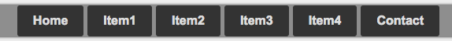
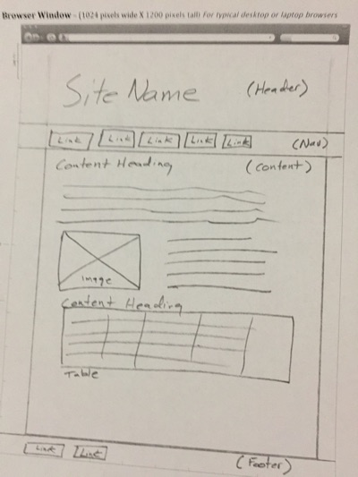
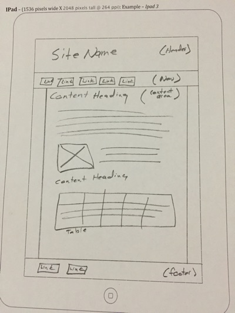
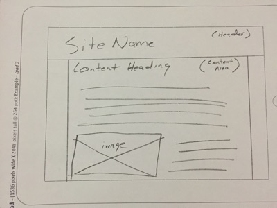
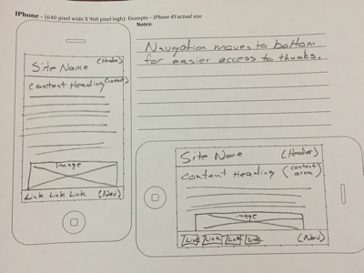

Site plan
Site description
Site name
myrecipegenius.com
Site purpose
myrecipegenius.com is a site that solves all of the worlds problems. At least the one that plague the people that sit in front of the pantry or fridge thinking, “What am I going to make to eat?!”. Recipe Genius takes the ingredients that you input and returns recipes that you could make with the food that you have. Find a recipe that you loved? You can also save recipes to you favorites. There is also a function for those of you have that have specific function to cook for because lets face it meals aren’t created equal. You wouldn’t take a turkey dinner on a hike, or serve energy granola for dinner. Bottom line if you need a recipe, Recipe Genius is the place to find it.
Traget Audience
- Physical characteristics
-
- Age: 10-75
- Gender: non specific
- Education: non specific
- Economic status: non specific
- Language: English
- Geographic location: non specific
- Technical characteristics
-
- Devices used to access the site: Computer/Tables/Mobile
- Operating system of choice: non specific
- Browser of choice: Chrome/Non specific
- Frequency of use: Once maybe twice a day
- Experience level: Able to use the Internet to find the site. Able to click on drop down menus to select ingredients.
Personas
- Name: Caleb Green

Job Titles and Major Responsiblities:
Human Resources Manager: Plan, direct, and coordinate the administrative functions of an organization. They oversee the recruiting, interviewing, and hiring of new staff; consult with top executives on strategic planning; and serve as a link between an organization's management and its employees.Demographics:
- Age: 32
- Education: Bachelors degree in Business, Boston University
- Ethnicity: Caucasian
- Family status: Married, Father of two
The goals and tasks they are trying to complete using the site:
As a new foodie, he looks for new recipes and on occasion he cooks a special meal for his wife who has spent a long day with the kids.Their physical, social, and technological environment:
He is in shape for his age. He like to play basketball with the guys on Thursday night at the gym. He doesn’t have enough time to go to the gym regularly. He has a lot of friends at work and from around the neighborhood. He hold the title of the master griller in his cul-de-sac (it is a big deal). He is comfortable using a computer and refers to himself as an intermediate Internet user. He is connected via a high speed Wi-Fi connection at work and at home. He uses email extensively and uses the web about 6.5 hours during his work day.Quote:
WTF! (Where’s The Food)Name:
Cynthia Nguyen
Job Titles and Major Responsibilities:
Photographer: Takes pictures for events, and families.Demographics:
- Age: 26
- Education: Bachelors degree in Visual Arts, Ramapo College
- Ethnicity: Asian
- Family status: Single
The goals and tasks they are trying to complete using the site:
She like to look for new things to make with random ingredients by using the recipeGenius recipe finder. She enters new recipes that she and her friends come up with.Their physical, social, and technological environment:
He is in great shape. She love to jog and go to the gym at least three times a week. She eats well and has no dietary restrictions. She love to get together with her friends and cook food and have fun. She has a girls night with all her friend every Saturday. She is very familiar with computers. She works with adobe programs most of the day when she isn’t taking photos at event or with families. She uses email and pen drive to deliver photos to customers. She surfs the Internet but it is mostly for fun.Quote:
“Good food = Good Mood”
Scenarios
- How will this help me be more efficient in the kitchen?
- Are there complexity levels to the recipes? (beginner, intermediate,advanced)
- Is there an option for Prep time?
- What should I make for dinner?
- Ratings/ Review option for recipes?
- Do I have to register to use the site?
- Do I have to pay to use the site?
- Can I organize my recipe box?
- Will there be a news letter or notification for new recipes?
- Print or download recipe?
- Is there a mobile version or app?
Content Architecture
Content List
- How will this help me be more efficient in the kitchen?
-
- Home Page:
- Page will look like a recipe card with the following information:
- (Video and audio) Video of What Recipe Genius does, and how it can change cooking habits.
- Are there complexity levels to the recipes? (beginner, intermediate,advanced)
Are there Prep time option?
Ratings/ Review option for recipes? -
- Recipes page:
- Page will look like a recipe card with the following information:
- (Copy and images of recipes)Show Recipes
- (Copy and images of recipes)Show Rating
- (Copy and images of recipes)Show Difficulty
- (Copy and images of recipes)Show Prep Time
- (Copy and images of recipes)Print option from recipe
- Special diet Page:
- Page will look like a recipe card with the following information:
- (Copy and images of recipes)Show Recipes
- (Copy and images of recipes)Show Rating
- (Copy and images of recipes)Show Difficulty
- (Copy and images of recipes)Show Prep Time
- (Copy and images of recipes)Print option from recipe
- What should I make for dinner?
-
- Recipe Genius:
- Page will look like a recipe card with the following information:
- (Copy and images)User inputs ingredients, and get recipes that have those ingredients in them.
- (Copy and Images)Page will have a print option
- Do I have to register to use the site?
-
- Log in page:
- Page will look like a recipe card with the following information:
- (Copy)Login to access to recipe box
- (Copy)Input for user log in
- Do I have to pay to use the site?
-
- Member Page:
- Page will look like a recipe card with the following information:
- (Copy)Inputs for payment options
- (Copy)Customer information to gain access to complete site
- Can I organize my recipe box?
-
- Recipe Box:
- Page will look like a recipe card with the following information:
- (copy and images of food) A place to store your favorites (default a-z)
- (Copy and images of food) Options for grouped recipes in a scroll down menu(by category: dinner, lunch, breakfast, outdoor, dessert, special diet)
- Will there be a newsletter or notification for new recipes?
-
- News page:
- Page will look like a recipe card with the following information:
- (copy of hint/tips for cooking, images of food recipes)Maybe interesting cooking facts or tips for each day of the week
- (copy of hint/tips for cooking, images of food recipes)New and upcoming stuff for the site
- Is there a mobile version or app?
-
- Site plan page:
- (copy)Content architecture/Mobile version sketch
- No question posed for recipe builder.
-
- Recipe Builder:
- Page will look like a recipe card with the following information
- (copy)User inputs for recipe
- (copy)User selection for classifying recipe with prep time
- (copy)User selection for classifying recipe with difficulty
- (copy and image)User selection for uploading images
- No question posed for main/Standard page.
-
- Standard page:
- Background: Food under the white transparent background
- Foreground: recipe cards lined up with tabs being the navigation bar.
- This page will show behind all pages.
- (Copy, default to home page Video)Home page video
- (copy) Search bar at the top-mid right.
- (copy)Log in page link on the top right
- (copy)Footer links on the bottom mid section.
Site Map

Style guide
Color Scheme
the color scheme is .... based on ... colors
| #EEEEEE Where the color is |
Typography
Item |
Font |
Size |
Color |
|---|---|---|---|
| Font | |||
| Size | |||
| Color |
Navigation
Navigation will be displayed in this way....
Responsive Sketches
Desktop and Laptop

Tablet (Protiat Mode)

Tablet (landscape Mode)

Moblie
The navigation will move to the bottom to allow better access to links by thumbs for one-handed operation.
